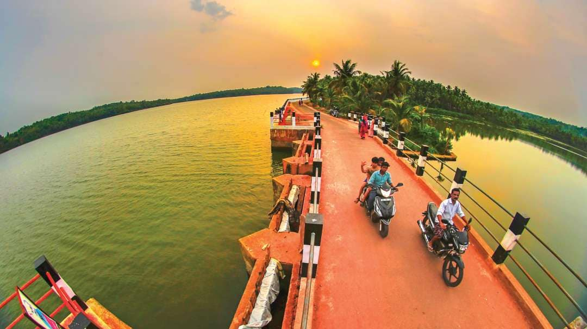

Lying in the Western Ghats of Kozhikode district in Kerala, Thusharagiri Fall cascades down as three waterfalls. Located in a small tribal village, the name of the falls means ???snow covered mountains'.
Last updated 3 mins ago

A popular hub to gorge on sweet delectables, the Sweet Street is one of the busiest place to shop in Kozhikode. It remains open till 9 in the night.
Last updated 3 mins ago

Said to be built on the remains of a shipwreck, the Thikkoti Lighthouse is one of the major attractions of Kozhikode. Located on a rocky shoreline, the place is best known for the scenic views it offers as well as several species of nomadic birds.
Last updated 3 mins ago